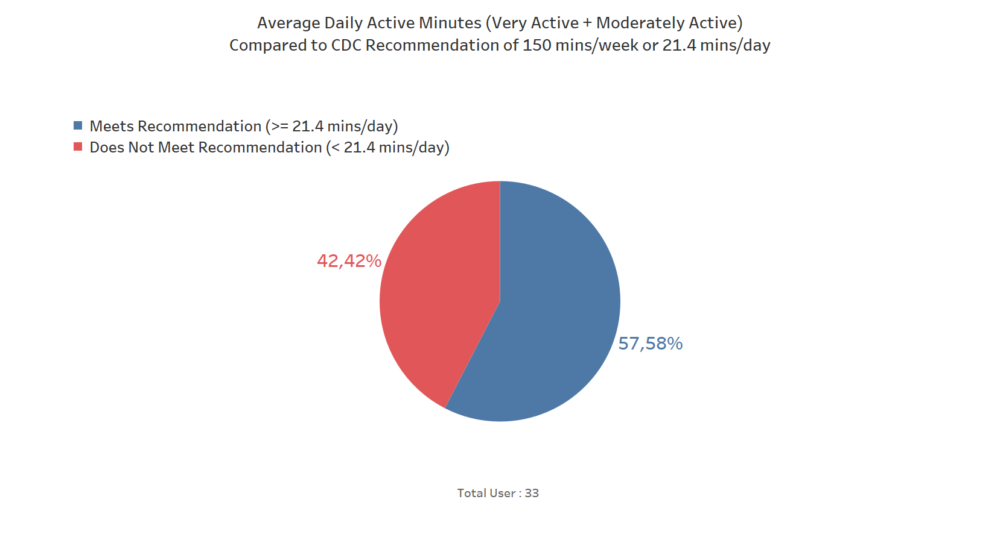
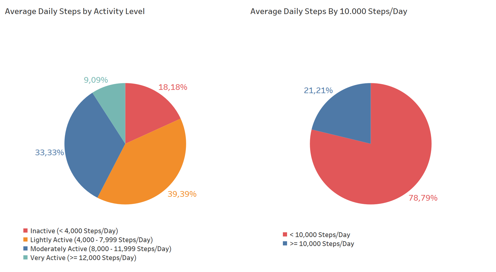
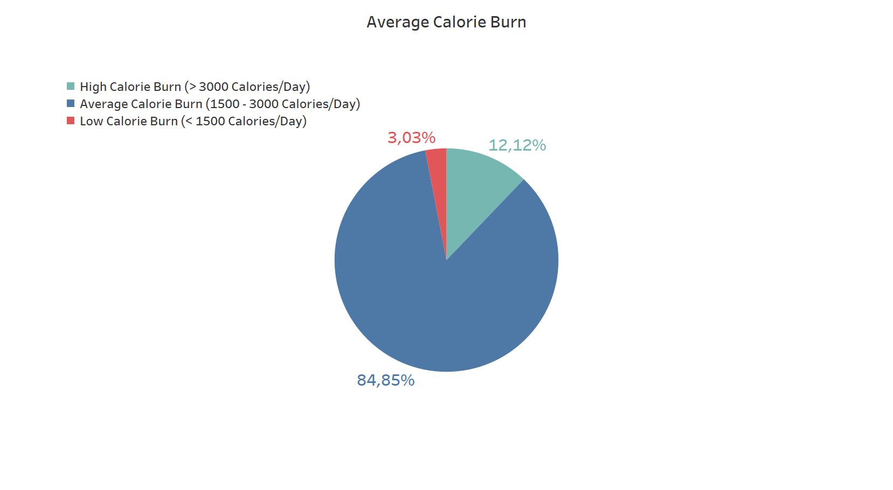
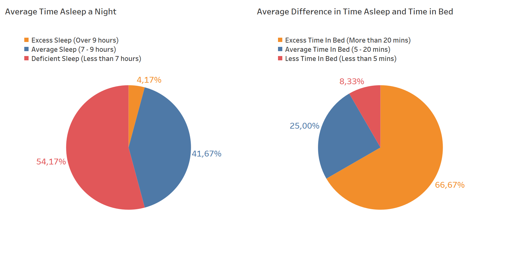
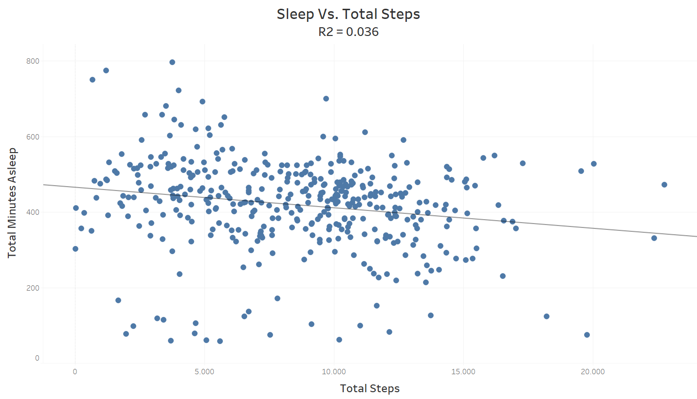
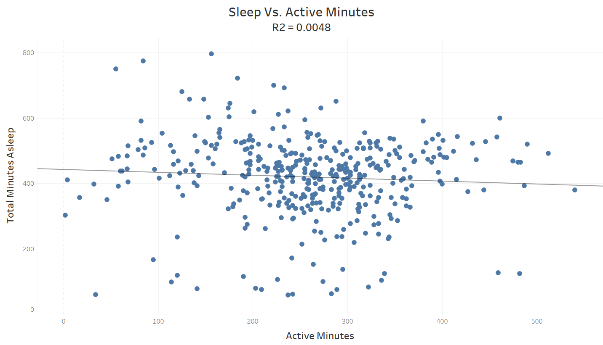
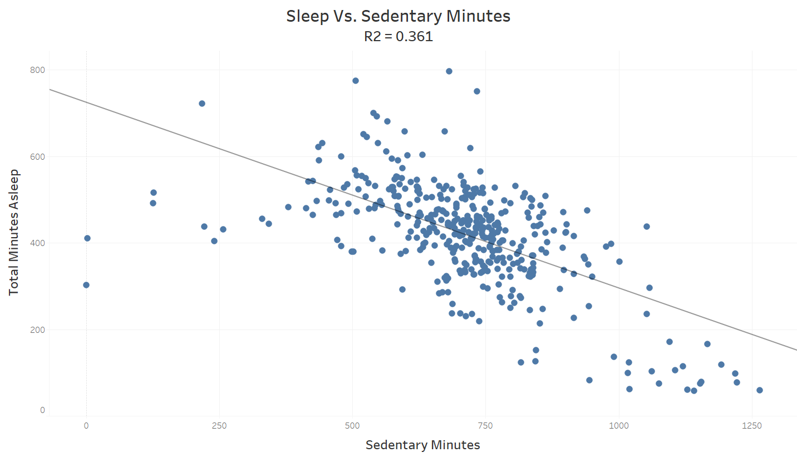
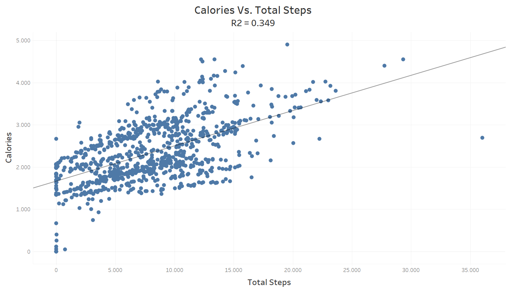
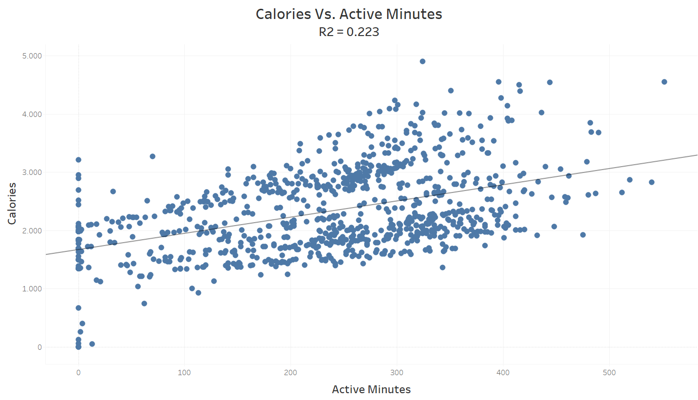
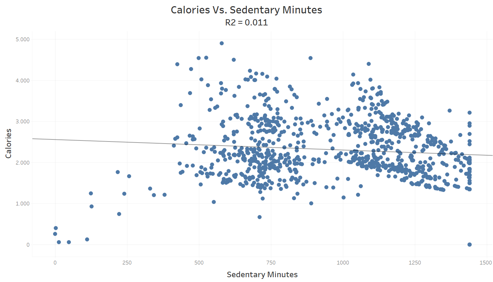

Date : 2022-10-25
1. Introduction
Urška Sršen and Sando Mur founded Bellabeat, a high-tech company that manufactures health-focused smart products. Sršen used her background as an artist to develop beautifully designed technology that informs and inspires women around the world. Collecting data on activity, sleep, stress, and reproductive health has allowed Bellabeat to empower women with knowledge about their own health and habits. Since it was founded in 2013, Bellabeat has grown rapidly and quickly positioned itself as a tech-driven wellness company for women.
By 2016, Bellabeat had opened offices around the world and launched multiple products. Bellabeat products became available through a growing number of online retailers in addition to their own e-commerce channel on their website. The company has invested in traditional advertising media, such as radio, out-of-home billboards, print, and television, but focuses on digital marketing extensively. Bellabeat invests year-round in Google Search, maintaining active Facebook and Instagram pages, and consistently engages consumers on Twitter. Additionally, Bellabeat runs video ads on Youtube and display ads on the Google Display Network to support campaigns around key marketing dates.
Sršen knows that an analysis of Bellabeat’s available consumer data would reveal more opportunities for growth. She has asked the marketing analytics team to focus on a Bellabeat product and analyze smart device usage data in order to gain insight into how people are already using their smart devices. Then, using this information, she would like high-level recommendations for how these trends can inform Bellabeat marketing strategy.
2. Summary
2.1 Business Task :
Analyze smart device fitness data in order to discover new growth opportunities for the company through improved marketing.
2.2 Stakeholders :
3. Prepare
3.1 Dataset Information
Data was obtained on Kaggle from the owner Mobius. The data was collected through a distributed survey through Amazon Mechanical Turk. 33 fitbit users consented to the submission of personal tracker data, including minute-level output for physical activity, heart rate, and sleep monitoring from 04/12/2016 to 05/12/2016.
3.2 Accessibility and Usage
The data is CC0: Public Domain meaning it is open-source and can be modified/used in any way by anyone.
3.3 Dataset Organization
The data is organized into 18 CSV files. The files contain the following information:
| File Name | Data Contained | Number of Users | Dates |
|---|---|---|---|
| dailyActivity_merged | Daily steps, distance, number of logged activities, calories, and both distance and minutes of activity by level | 33 | 04/12/2016 - 05/12/2016 |
| dailyCalories_merged | Daily calories | 33 | 04/12/2016 - 05/12/2016 |
| dailyIntensities_merged | Daily intensity in minutes and distance by activity level | 33 | 04/12/2016 - 05/12/2016 |
| dailySteps_merged | Daily steps | 33 | 04/12/2016 - 05/12/2016 |
| heartrate_seconds_merged | Heartrate every 5 seconds | 14 | 04/12/2016 - 05/12/2016 |
| hourlyCalories_merged | Hourly calories burned | 33 | 04/12/2016 - 05/12/2016 |
| hourlyIntensities_merged | Hourly total and average intensity | 33 | 04/12/2016 - 05/12/2016 |
| hourlySteps_merged | Hourly steps | 33 | 04/12/2016 - 05/12/2016 |
| minuteCaloriesNarrow_merged | Calories burned by the minute (narrow form) | 33 | 04/12/2016 - 05/12/2016 |
| minuteCaloriesWide_merged | Calories burned by the minute (wide form) | 33 | 04/12/2016 - 05/12/2016 |
| minuteIntensitiesNarrow_merged | Intensity counted by the minute (narrow form) | 33 | 04/12/2016 - 05/12/2016 |
| minuteIntensitiesWide_merged | Intensity counted by the minute (wide form) | 33 | 04/12/2016 - 05/12/2016 |
| minuteMETsNarrow_merged | Metabolic equivalent of task (energy ratio versus at rest) by the minute | 33 | 04/12/2016 - 05/12/2016 |
| minuteSleep_merged | Sleep by the minute | 24 | 04/12/2016 - 05/12/2016 |
| minuteStepsNarrow_merged | Steps tracked by the minute (narrow form) | 33 | 04/12/2016 - 05/12/2016 |
| minuteStepsWide_merged | Steps tracked by the minute (wide form) | 33 | 04/12/2016 - 05/12/2016 |
| sleepDay_merged | Daily sleep with number of times sleeping, minutes sleeping, minutes in bed | 24 (21)* | 04/12/2016 - 05/12/2016 |
| weightLogInfo_merged | Weight (in kilograms and pounds) with BMI | 8 | 04/12/2016 - 05/12/2016 |
For this analysis, the CSV files tracking information by the minute was not utilized as that level of detail is not necessary for the bigger picture analysis. Additionally, the MET (Metabolic equivalent of task) data was not used as this information is useful only as a comparison for each individual user. MET data shows a user their level of exertion from a baseline but cannot really be used as a comparison between users. Therefore, this data is not necessary for analysis.
4. Process
4.1 Data Tools Used
In this analysis, I will be using Microsoft Excel XLS for data sets fomat and basic cleaning, MySQL for the data cleaning, analysis and manipulation of data, Navicat Premium for the Database Graphical UI, and Tableau for the creation of visuals.
4.2 Cleaning and Manipulation of Data
The full data cleaning process has been documented in “Data Cleaning Process”.
5. Analysis
5.1 The Average User
We can determine what the average user is like by looking at averages data. We can then compare this to the average person to determine how close our data sample is to the actual population.
Calculating Averages for each daily metric :
| Daily Metric | Average Value from Dataset |
|---|---|
| Average Steps | 7,638 |
| Average Distance | 5.49 |
| Average Calories | 2,304 |
| Average Very Active Minutes | 21.16 |
| Average Fairly Active Minutes | 13.56 |
| Average Lightly Active Minutes | 192.81 |
| Average Sedentary Minutes | 991.21 6/ / 525.887 |
| Average Times Sleeping | 1.12 |
| Average Minutes Asleep | 419.17 |
| Average Minutes in Bed | 458.48 |
5.2 Overview of FitBit Fitness Tracker Data
5.2.1 Activity
The CDC recommends that people complete 150 minutes of moderate activity a week. This averages to 21.4 minutes of moderate activity a day. To calculate how many of our users meet this metric, we will add the Very Active and Fairly Active minutes and determine each users daily average. If it is >= 21.4 minutes/day they will be considered as meeting this metric. If it is < 21.4 minutes/day we will consider it not meeting the CDC guidelines. It is important that we look at this by day average because not all users submitted the same amount of days data and, therefore, they might appear to not meet the weekly metric.

From the data, we can see that 42.42% of users did not meet the >/= 21.4 min/day requirement while 57.58% did.
5.2.2 Steps
Studies have shown that higher daily step counts are linked to better health. While the common belief is that 10,000 steps are needed a day, a recent study by the National Cancer Institute, the National Institue on Aging, and the CDC, looked at three ranges for steps (4000, 8000, and 12000). Therefore, we will be using those 'steps' as our guide. We will consider anyone who has less 4,000 steps as "Inactive", anyone between 4,000-7,999 steps as "Lightly Active", anyone between 8,000-11,999 steps as "Moderately Active", and anyone above 12,000 steps as "Very Active".

Only 9.09% of the users had 12,000 or more average steps in a day, 18.18% of users had less than 4,000 steps in a day and are therefore, considered inactive.
If we break this down by the usual 10,000 steps plus we can see that more users have reached this metric (21.21%). This is probably because the common thought is that 10,000 steps/day is what is needed to be considered healthy. However, there are still many users who did not reach 10.000 steps/day.
5.2.3 Calories
Therefore, we will group by the range of calorie levels with the following criteria: < 1500 calories/day = "Low Calorie Burn", 1,500-3,000 calories/day = "Average Calorie Burn", and > 3000 calories/day = "High Calorie Burn".

5.2.4 Sleep
While the hours of sleep each person needs a day can also vary depending on many factors, there are generally accepted healthy ranges for adults to sleep. Adults are recommended to get between 7-9 hours of sleep a day on average as per the National Sleep Foundation's guidelines. Therefore, we will use the following to group our users by the amount of sleep they get: more than 9 hours of sleep = "Excess Sleep", between 7-9 hours of sleep = "Average Sleep", and less than 7 hours as "Deficient Sleep".
Another factor to look at is the difference between how long a user is in bed versus how much they are actually asleep. This may indicate how long it takes a user to fall asleep. According to the Cleveland Clinic, it takes the average person 5-20 minutes to fall asleep at night. More time may suggest a person is having difficulty sleeping. Less time may indicate that a person is very tired and sleep deficient (though a person who takes a long time to fall asleep may still be deficient). We will create the following groups: less than 5 minutes difference in sleep time and time in bed = "Less Time in Bed", between 5 to 20 minutes = "Average Time in Bed", and more than 20 minutes = "Excess Time in Bed".

We can see that the majority of users had less than 7 hours of sleep/night (54.17%) which would make them sleep deficient, and 41.67% of users get sufficient sleep.
The majority of users (66.67%) spent more than 20 minutes in bed on average where they were not sleeping.
5.3 Basic Trends
5.3.1 Sleep vs. Total Steps
Looking at users total minutes asleep versus total steps, we can see that there isn't any correlation between the two variables with an R2 value of only 0.036.

5.3.2 Sleep vs. Active Minutes
Looking at user’s total minutes asleep versus activity minutes (Very Active + Fairly Active + Lightly Active), we can see, again, that there really is no correlation between the two variables with an R2 value of only 0.0048.

5.3.3 Sleep vs. Sedentary Minutes
Here we can clearly see the negative relationship between sedentary minutes and total minutes asleep, with an R2 value of 0.361.
However, this correlation may be stronger due to the fact that the sedentary time INCLUDES time someone is sedentary in their sleep. Therefore, it makes sense that these two variables have a higher correlation.

Overall, there does not appear to be much of any statistical significance when comparing the amount a person sleeps to their other health metrics.
5.3.4 Calories vs. Total Steps
We see positive correlation here between total steps and calories, with an R2 value of 0.349, which is obvious - the more active we are, the more calories we burn.

5.3.5 Calories vs. Active Minutes
We also see positive correlation between activity minutes (Very Active + Fairly Active + Lightly Active) and calories, with an R2 value of 0.223. Again, it indicates that the more active we are, the more calories we burn.

5.3.6 Calories vs. Sedentary Minutes
Comparing a users calorie burn in a day versus their sedentary minutes, we can see negative correlation with an R2 value of only 0.011. When we compare this to the other metrics we compared to calorie burn, it is cleat that being more inactive, the less calories we burn.

5.4 Hourly Activity Trends
Activity by Hour of the Day

Most activity happens between 5 pm and 7 pm, with the most at 6pm, and between 12 pm and 2 pm also being relatively high. I suppose, that people go to a gym or for a walk after finishing work, and around lunchtime, 12 pm, this may be from people walking to get lunch or being more active in a break at work.
6. Recommendations
Review: Bellabeat is a company that manufactures smart technologies for women to track varying aspects of their health. The company currently offers three different devices for tracking things such as activity, sleep, stress, and water intake. They also have an app (which users can use to see their health data) and a membership (which provides users with personalized health guidance).
The marketing recommendations for Bellabeat products are as follows :
1. Increase digital campaign showing the benefits to take at least 8,000 steps in a day for people’s health
Average total steps per day are 7,638 which a little bit less for having health benefits for according to the CDC research. They found that taking 8,000 steps per day was associated with a 51% lower risk for all-cause mortality (or death from all causes). Taking 12,000 steps per day was associated with a 65% lower risk compared with taking 4,000 steps.
Bellabeat can encourage people to take at least 8,000 steps in a day by increasing digital campaign explaining the benefits for their health.
2. App reminders to remind users if there are factors that have not been achieved or excess in the recommended daily target
1) The recommended total steps in a day are at least 8,000 steps, if users still don't meet this target, the Bellabeat app can remind users to go for a run or walk.
Most activity happens between 5 pm and 7 pm - I suppose, that people go to a gym or for a walk after finishing work. Bellabeat can use this time to remind and motivate users to go for a run or walk.
2) If users consume daily calories less than or exceed their total daily calorie limit, the Bellabeat app can remind users to control their daily calorie consumption.
3) Adults are recommended to get between 7-9 hours of sleep a day on average as per the National Sleep Foundation's guidelines. Bellabeat should consider using app notifications to go to bed to ensure users get enough sleep, and sound an alarm when their sleep time exceeds the normal limit.
3. Provide a guide to the recommended daily calorie count and suggest some ideas for meals menu for those who want to lose weight or gain weight in order to achieve their target
If users want to lose weight, it's probably a good idea to control daily calorie consumption. Bellabeat can provide a recommended daily calorie guide and suggest some ideas for low-calorie meals menu.
It’s the same with users who want to gain weight.